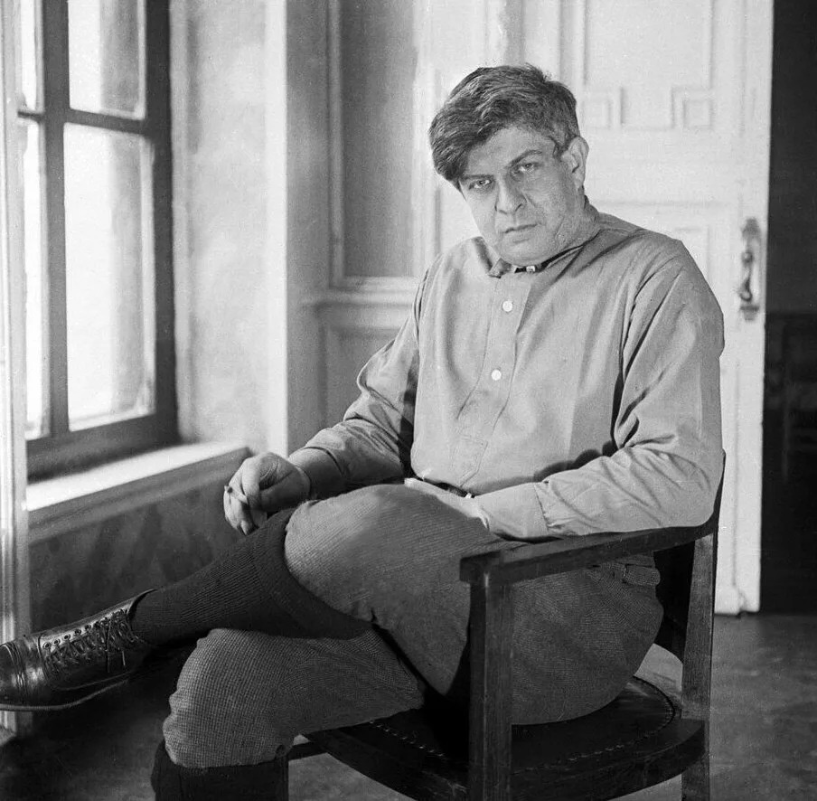

1895 — 1934 · ОДЕССА — МОСКВА
Эдуард Багрицкий —
поэт южного ветра
Голос Одессы, морская романтика и энергия эпохи — в жизни и стихах одного из ярких поэтов XX века.
Открыть биографию →
ИЗУЧИТЬ НАСЛЕДИЕ
Мир Багрицкого
О ПОЭТЕ
Море в словах, время в строках
Багрицкий соединял романтическую образность с энергией современности. Его поэзия выросла из культурной среды Одессы и стала частью литературной истории XX века.